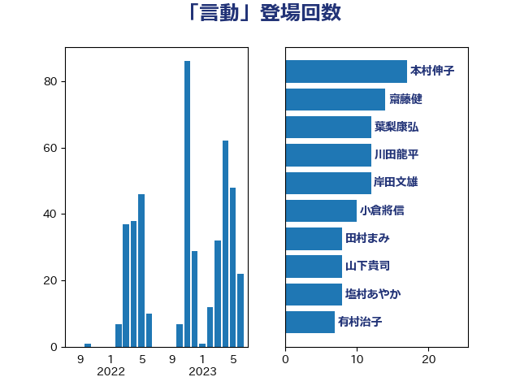

単語「言動」

| 田村まみ | 国民民主党 | 11 回 |
| 川田龍平 | 立憲民主党 | 10 回 |
| 田村憲久 | 自由民主党 | 8 回 |
| 岡本あき子 | 立憲民主党 | 7 回 |
| 城井崇 | 立憲民主党 | 6 回 |
| 本村伸子 | 日本共産党 | 6 回 |
| 麻生太郎 | 自由民主党 | 6 回 |
| 大塚耕平 | 国民民主党 | 4 回 |
| 大西健介 | 立憲民主党 | 4 回 |
| 守島正 | 日本維新の会 | 4 回 |
| 西村智奈美 | 立憲民主党 | 4 回 |
| 階猛 | 立憲民主党 | 4 回 |
| 武田良太 | 自由民主党 | 3 回 |
| 田村智子 | 日本共産党 | 3 回 |
| 若宮健嗣 | 自由民主党 | 3 回 |
| 高木毅 | 自由民主党 | 3 回 |
| 高橋克法 | 自由民主党 | 3 回 |
| 伊藤岳 | 日本共産党 | 2 回 |
| 古川禎久 | 自由民主党 | 2 回 |
| 吉田統彦 | 立憲民主党 | 2 回 |
| 大串博志 | 立憲民主党 | 2 回 |
| 宮口治子 | 立憲民主党 | 2 回 |
| 山下雄平 | 自由民主党 | 2 回 |
| 山岸一生 | 立憲民主党 | 2 回 |
| 東徹 | 日本維新の会 | 2 回 |
| 柚木道義 | 立憲民主党 | 2 回 |
| 田中健 | 国民民主党 | 2 回 |
| 萩生田光一 | 自由民主党 | 2 回 |
| 鈴木宗男 | 日本維新の会 | 2 回 |
| 音喜多駿 | 日本維新の会 | 2 回 |
| 今井絵理子 | 自由民主党 | 1 回 |
| 伊波洋一 | 無所属 | 1 回 |
| 佐藤英道 | 公明党 | 1 回 |
| 勝部賢志 | 立憲民主党 | 1 回 |
| 吉田久美子 | 公明党 | 1 回 |
| 堀場幸子 | 日本維新の会 | 1 回 |
| 塩村あやか | 立憲民主党 | 1 回 |
| 宮路拓馬 | 自由民主党 | 1 回 |
| 小池晃 | 日本共産党 | 1 回 |
| 小西洋之 | 立憲民主党 | 1 回 |
| 山下芳生 | 日本共産党 | 1 回 |
| 山本太郎 | れいわ新選組 | 1 回 |
| 山添拓 | 日本共産党 | 1 回 |
| 岸信夫 | 自由民主党 | 1 回 |
| 岸田文雄 | 自由民主党 | 1 回 |
| 平木大作 | 公明党 | 1 回 |
| 後藤茂之 | 自由民主党 | 1 回 |
| 新垣邦男 | 立憲民主党 | 1 回 |
| 有村治子 | 自由民主党 | 1 回 |
| 杉尾秀哉 | 立憲民主党 | 1 回 |
| 松野博一 | 自由民主党 | 1 回 |
| 枝野幸男 | 立憲民主党 | 1 回 |
| 橋本岳 | 自由民主党 | 1 回 |
| 津島淳 | 自由民主党 | 1 回 |
| 清水真人 | 自由民主党 | 1 回 |
| 盛山正仁 | 自由民主党 | 1 回 |
| 石井苗子 | 日本維新の会 | 1 回 |
| 石川大我 | 立憲民主党 | 1 回 |
| 磯崎仁彦 | 自由民主党 | 1 回 |
| 神谷裕 | 立憲民主党 | 1 回 |
| 福山哲郎 | 立憲民主党 | 1 回 |
| 稲田朋美 | 自由民主党 | 1 回 |
| 茂木敏充 | 自由民主党 | 1 回 |
| 荒井優 | 立憲民主党 | 1 回 |
| 蓮舫 | 立憲民主党 | 1 回 |
| 西村康稔 | 自由民主党 | 1 回 |
| 道下大樹 | 立憲民主党 | 1 回 |
| 金子恵美 | 立憲民主党 | 1 回 |
| 鈴木俊一 | 自由民主党 | 1 回 |
| 阿部弘樹 | 日本維新の会 | 1 回 |
| 高橋千鶴子 | 日本共産党 | 1 回 |